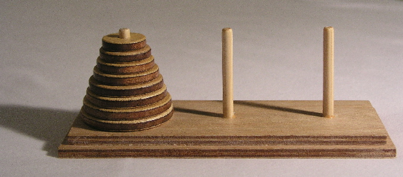
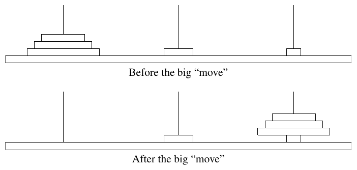

48th ICPC World Championship · Problem K
Lucas believes that at six years old, his son is ready to learn some basic algorithms. To start, he chose one of the most beautiful techniques: recursion, and to illustrate it, he picked the well-known recursion game: the Tower of Hanoi.

The Tower of Hanoi is a mathematical game consisting of three rods and a number of disks of various diameters, which can slide onto any rod. The puzzle begins with the disks stacked on the first rod in order of size, the smallest at the top, thus approximating a conical shape. The objective of the puzzle is to transfer the entire stack to the last rod, obeying the following rules:
Lucas knows that the minimal number of moves required to solve a Tower of Hanoi puzzle is 2n − 1, where n is the number of disks. What’s more, the optimal moves are unique, which means that n and the number of moves that have been done uniquely represent the current state of the game, given that the disks are always moved optimally.
Lucas was showing his son how to solve the game step by step. He has already done the first k optimal moves. Since it will still take a while to finish, he took a short break to grab some snacks. Unfortunately, when he came back, he found that his naughty little son has done a big “move”: knowing that the goal is to transfer all disks from the first rod to the last rod, his son literally transferred “all disks from the first rod to the last rod” in one move (without changing their respective order), see figure K.1.

Lucas believes that he can still use this as a teaching opportunity. He decides to solve the game still using only “valid” moves. However, he wonders what is the current minimum number of moves required to solve the game. Since he is also busy dealing with his son, he needs your help!
Note that a “valid” move is still well-defined even if the given state is invalid. That is, you can only move one top disk at a time, and you cannot place it on top of another disk that is smaller than it. In particular, it is valid to put a disk of size a on top of a rod that contains a disk of size b (b < a) if the top disk on this rod has size c (a < c).
The first line contains an integer n (1 ≤ n ≤ 200 000), the number of disks in the game.
The second line contains an integer k (0 ≤ k ≤ 2n − 1), the number of optimal moves Lucas did prior to the big move. Note that k is given in binary.
Output one integer in binary, the minimum number of moves required to finish the game.
3 0
0
3 10
110
5 11011
11